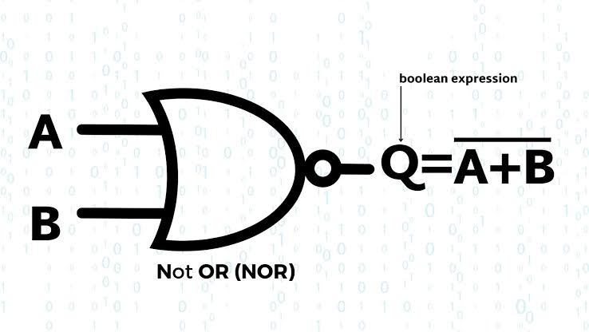
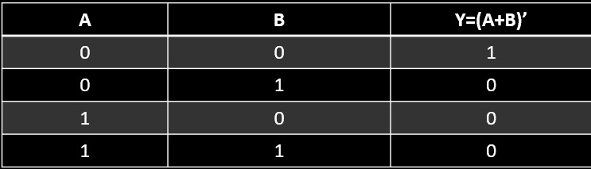

NOR GATE
A NOR gate is a digital logic gate that gives an output of 0 when any of its inputs are 1, otherwise 1. NOR gates can be made to produce a variety of logic gates, including OR and AND gates. The output of the NOR gate is a logic 0 as long as the input voltage is below the threshold.
Logic Diagram:
Truth Table:
